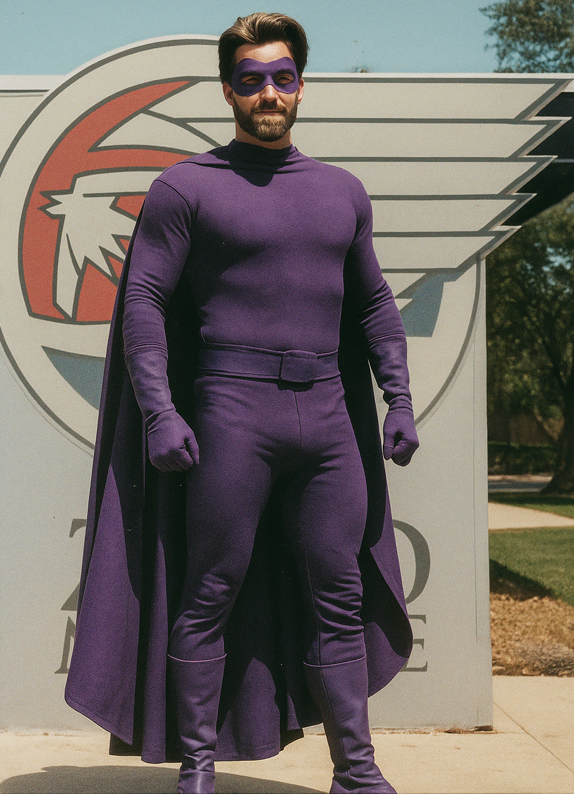
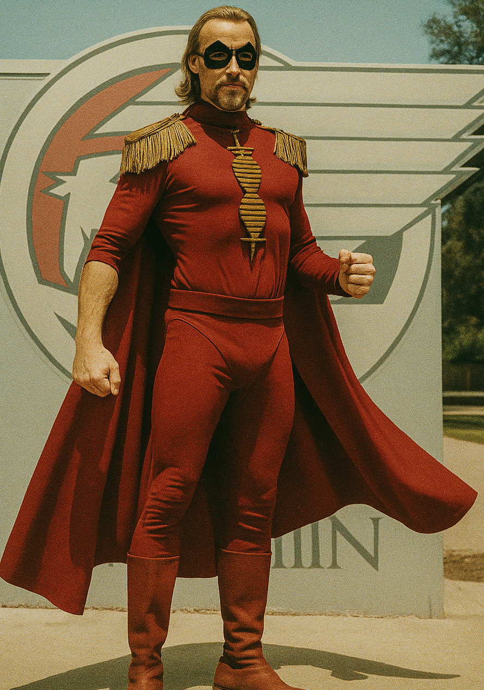
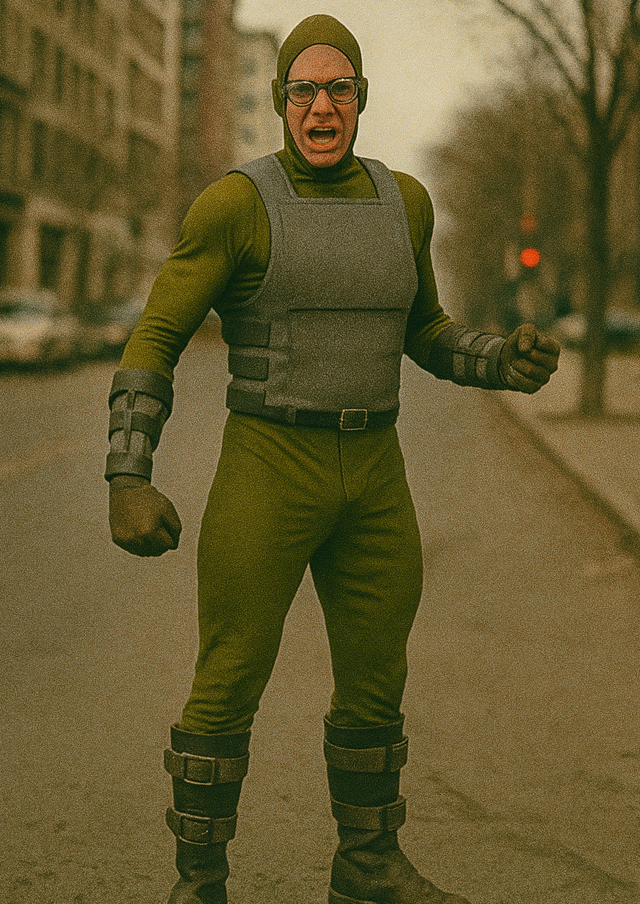

Members

The Siren
Strength
Endurance
Intelligence
Agility
Indestructibility
Powers
- Social Telepathy
- Emotional Omniscience, Touch-Based Hypnosis
- Crowd Control, Seduction Mastery
- Psychic Feedback, Tech Limits
Personality
- Flirtatious, Silver-tongued narcissist
- Tactical Genius
- Sees people as puppets
- Overconfident, and known to Self-Sabotage

Flex Magnus
Strength
Endurance
Intelligence
Agility
Indestructibility
Powers
- Near-Limitless Flexibility
- Shock Absorption, Enhanced Grappling
- Shape-Shifting Tricks
- Vulnerable to Extreme Heat/Cold
Personality
- Egotistical Showoff
- Braggadocious
- Selective Memory
- Distracted by Praise
Volt Dude
Strength
Endurance
Intelligence
Agility
Indestructibility
Powers
- Electrokinesis, Flight
- Electric Immunity
- Energy Absorption
- Water Hazard, Predictable Moves
Personality
- Laid-Back & Relatable
- Sarcastic but Good-Natured
- Uses his powers for everyday things
- Mild Ego

Fracture
Strength
Endurance
Intelligence
Agility
Indestructibility
Powers
- Sonic Scream, Regeneration
- Heals from bullet wounds, burns, and even lost limbs in minutes
- Slows aging, making him biologically resilient
- Severe injuries take time to heal (a missing arm might regrow in an hour)
Personality
- Insecure & Self-Doubting
- Protective & Loyal
- Stoic but Emotionally Fragile
- Uses grim jokes about his own "indestructibility" to cope
Grievance
Strength
Endurance
Intelligence
Agility
Indestructibility
Powers
- Telekinetic Field, Telekinetic Strength
- His powers do not drain him; they are a constant state of being
- When he focuses, he can unleash devastating telekinetic blows, crush fortifications, and create impenetrable shields for others.
- The control and focus of his powers are directly tied to his emotional state, A powerful mental assault could bypass his defenses to agitate or disorient him, making his physical power even more unstable.
Personality
- Questions Authority Often
- Somewhat Awkward
- Loyal to The Siren
- Gets Distracted Easily
Jump-Cut
Strength
Endurance
Intelligence
Agility
Indestructibility
Powers
- Spatial Teleportation, Katana Expertise
- Line-of-Sight Required
- Can also teleport to random places
- Frequent use of teleportation in a short time leads to extreme mental fatigue, migraines, and nausea, effectively crippling him
Personality
- Empathetic Yet Socially Awkward
- Plagued by profound loneliness and a desire for connection
- He will always try to do the right thing, even if his methods are chaotic, poorly planned, and involve accidentally teleporting into the villain's bathroom.
- he is a terrifyingly efficient blend of master swordsman and teleporting skirmisher. In every other aspect of life, he is a mess.
Sir Runz-A-Lot
Strength
Endurance
Intelligence
Agility
Indestructibility
Powers
- Super-Speed
- Metabolism is a perpetual motion machine, allowing him to run vast distances without fatigue
- His body is bizarrely durable against blunt force trauma
- His perception does not keep up with his speed.
Personality
- Terminally Gullible & Simple
- Unshakably Optimistic & Cheerful
- Fiercely Proud (Of All the Wrong Things)
- Well-Intentioned to a Fault